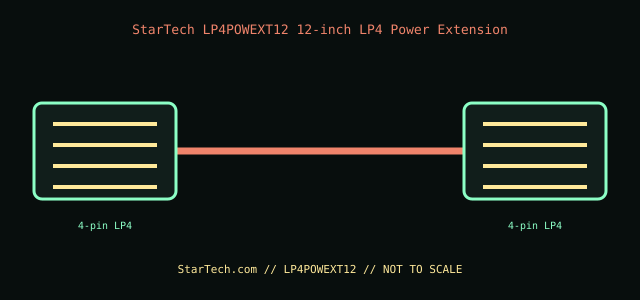

[ INTERNAL PC POWER CABLE // MODEL-SPECIFIC RECORD ]
StarTech LP4POWEXT12 12-inch LP4 Power Extension
StarTech.com manufacturer part LP4POWEXT12. This record documents only this specified cable assembly; connector fit is not evidence of a matching pinout or PSU compatibility.

PSU SAFETY: Modular PSU-side cable pinouts are proprietary and model-family-specific. Never substitute a modular cable by brand, connector fit, color, or appearance; use only the exact PSU maker-approved cable for the exact PSU model and revision.
Manufacturer specifications
| Manufacturer part | StarTech.com LP4POWEXT12 |
|---|---|
| Connector / pin count | One 4-position LP4 (legacy 4-pin peripheral/Molex) plug to one 4-position LP4 receptacle. |
| Wire gauge / length | 18 AWG; 12 in (304.8 mm). |
| Compatible PSU family | A standard LP4 peripheral-power output from an ATX PSU’s original cable harness. If the PSU is modular, attach this extension only to its approved device-end LP4 lead; never insert it into a proprietary modular socket or assume another PSU’s cable is interchangeable. |
Power and safety caveats
For peripherals with an LP4 input only. The extension does not add capacity; keep the PSU lead and contacts within their ratings. Do not overload a daisy-chained harness, force the keyed connector, or use it to adapt to high-draw GPU power.
Case clearance and routing
Allow a 12 in route plus the PSU lead and connector bodies. Check drive-cage distance and slack at the device, keep the cable away from fan blades and sharp edges, and avoid side-panel or drive-tray pinching.
Manufacturer specifications and manuals
- StarTech.com — LP4POWEXT12 product pageManufacturer product identification and 12-inch LP4 extension purpose.
- StarTech.com — LP4POWEXT12 datasheet (PDF)Manufacturer technical sheet for 4-position LP4 ends, length, and 18 AWG wire.
Use current manufacturer documentation for exact model revisions and installation. This archive illustration is a connector-identification schematic, not an electrical pinout.